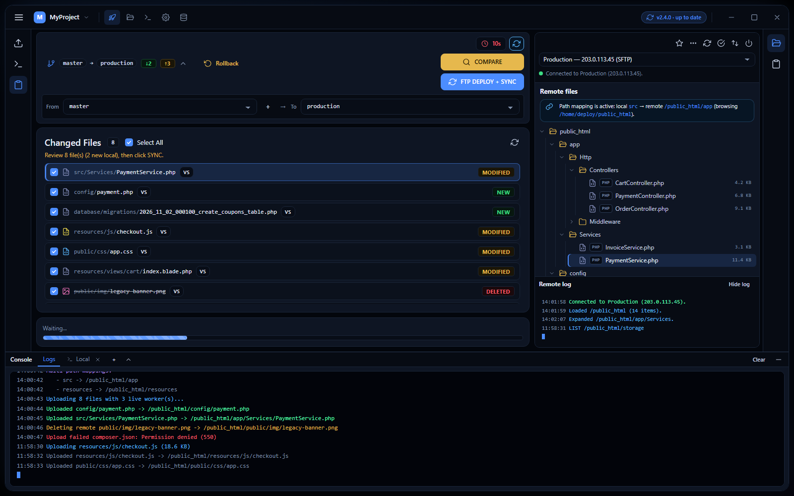
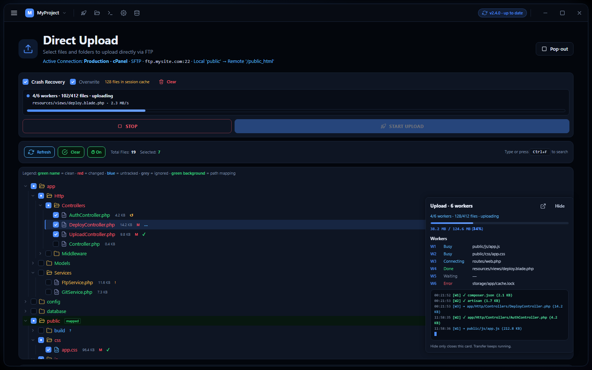
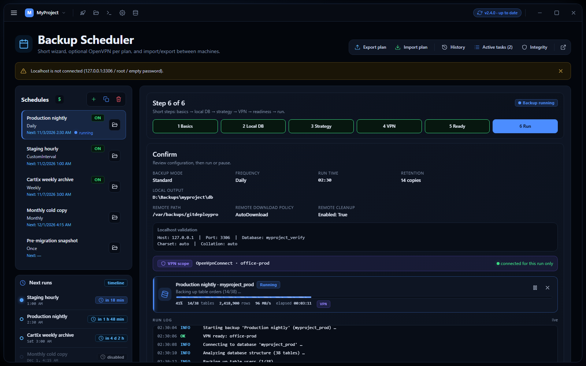
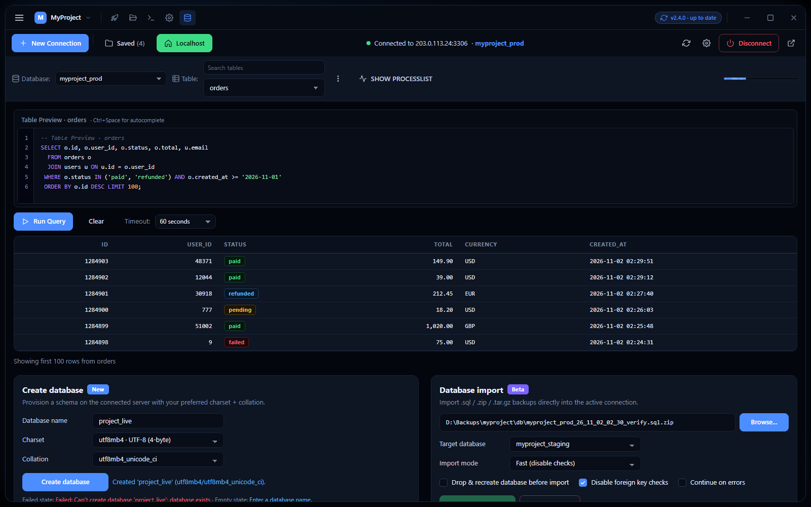
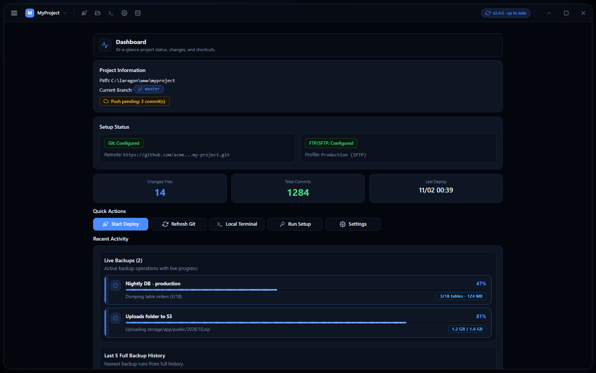
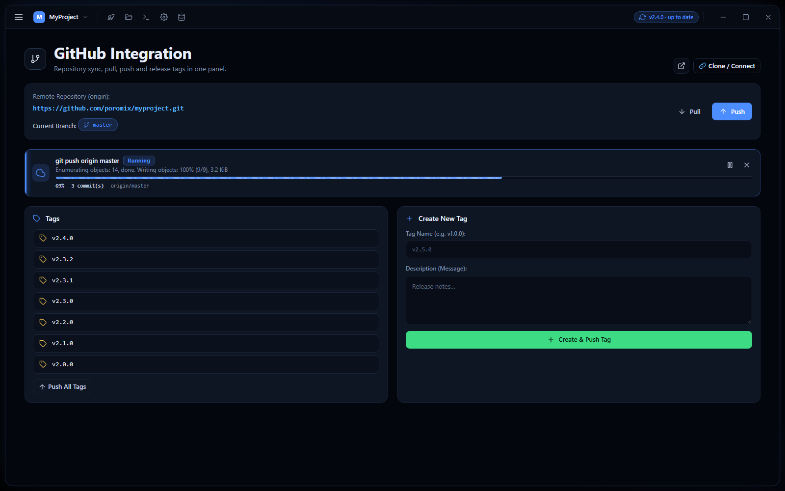
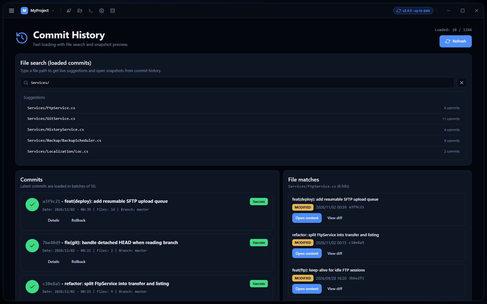
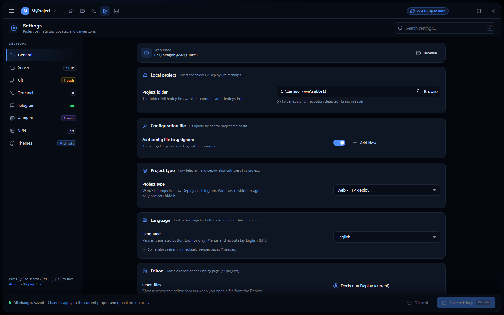
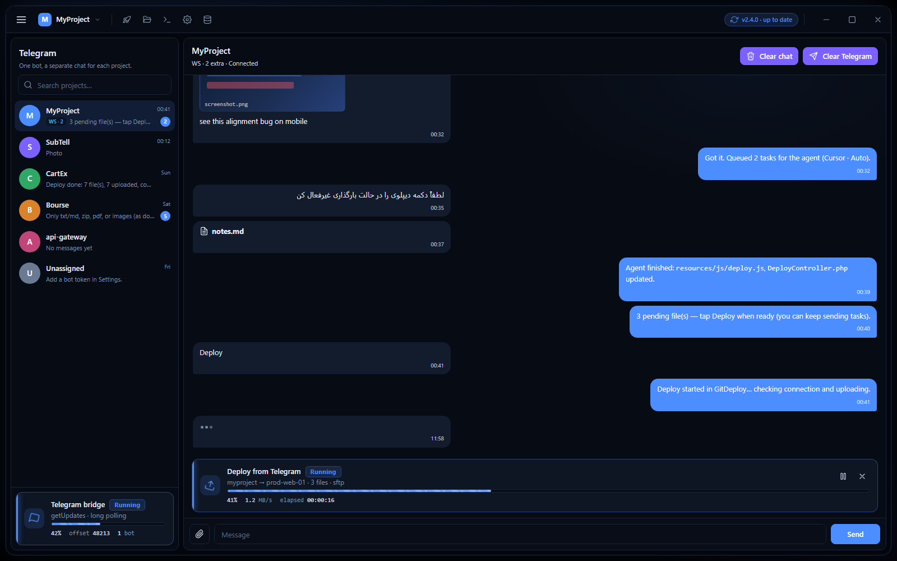

Git + Deploy
Compare branches, review changed files, commit, push and deploy in one flow — with rollback one click away.
Git sync, FTP/SFTP workspaces, terminals, database tools, scheduled backups, VPN keep-alive and a Telegram bot driven by Cursor or Claude Code — built for operators who live on Windows.

Features
Ship, inspect, recover and talk to your stack without leaving the desk.
Compare branches, review changed files, commit, push and deploy in one flow — with rollback one click away.
Browse, edit, sync and recover remote files with path mapping and conflict-aware transfers.
Pick files or folders and push them straight to the server with parallel workers and crash recovery.
Local and SSH sessions with saved command presets and suggestions, right next to your deploy.
Connect to MySQL / MariaDB, browse tables, run queries and import dumps without another client.
A guided 6-step wizard, optional OpenVPN per plan, localhost restore validation and a live run log.
Screens
A dark, calm interface with real icons, clear status colors and consistent controls. Click any screenshot to enlarge.
Deploy. Branch chips with ahead/behind counters, a changed-files list with status badges, and the remote file tree beside it.

Direct Upload. Parallel workers, live progress and crash recovery for large uploads.

Backups. A step-by-step wizard, a timeline of next runs and a live log while a backup is running.

Database Studio. Query editor, results grid with colored status values, and process list.

Dashboard. Project status, quick actions and recent backup activity in one place.

GitHub. Clone, pull, push and tag from a single page.

History. Search commits by file path and roll back with a preview.

Settings. Searchable sections, an unsaved-changes bar and a one-click Save.
Workflow
A straight operator loop — no dashboard clutter, no ceremony.
Project path, server profile and optional VPN keep-alive.
See local vs remote and stage exactly what changed.
Deploy the selected files, watch progress, verify on the remote tree.
Scheduled backups, agent chat and auto-reconnect when the network blinks.
AI agents
Send a message from your phone and an AI coding agent works inside your project folder — with a per-project queue, Stop button, model picker and session resume.

Download
Self-contained Windows x64 executable. The in-app updater reads the same feed as this page.
Loading latest release…
Download GitDeployProDocs
Deep dives when you need more than a landing page.
Architecture map and navigation for the full product.
Compare-select-deploy and remote editor patterns.
Scheduler lifecycle and integrity sampling.
Incident-friendly shell and SQL workflows.
Packaging and artifact guidance.
Common runtime issues and the escalation checklist.